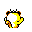

#052
Meowth
Normal
Adores circular objects. Wanders the streets on a nightly basis to look for dropped loose change
Base stats Total 290
HP50
Attack65
Defense45
Speed90
Special40
Details
- Species
- Scratchcat
- Height
- 1'04"
- Weight
- 9.0 lb
- Catch rate
- 255
- Base exp
- 69
- Growth
- Medium Fast
Level-up moves
LevelMoveType
StartScratchNormal
StartGrowlNormal
Lv 9Quick AttackNormal
Lv 16Fury SwipesNormal
Lv 21Pay DayNormal
Lv 22BiteDark
Lv 28ScreechNormal
Lv 31Body SlamNormal
Lv 44Double-EdgeNormal
TM / HM
TM06 ToxicTM07 Shadow BallTM08 Body SlamTM09 Take DownTM10 Double-EdgeTM11 BubblebeamTM12 Water GunTM16 Metal ClawTM20 Pay DayTM24 ThunderboltTM25 ThunderTM28 DigTM31 MimicTM32 Double TeamTM34 BideTM39 SwiftTM42 Dream EaterTM44 RestTM45 Thunder WaveTM50 SubstituteHM01 CutHM05 Flash